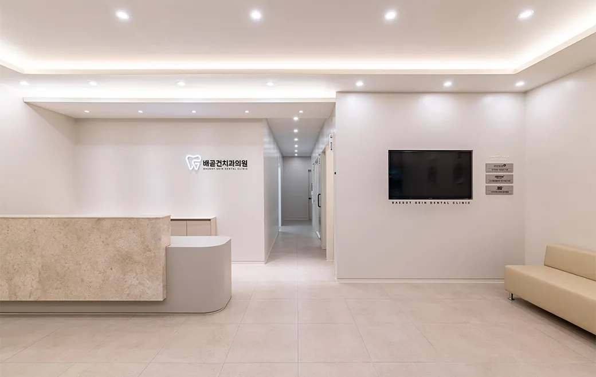
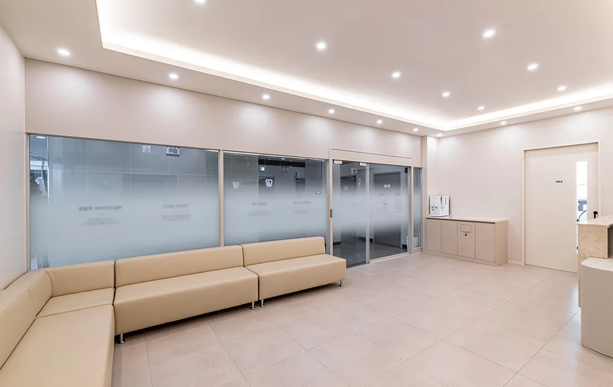
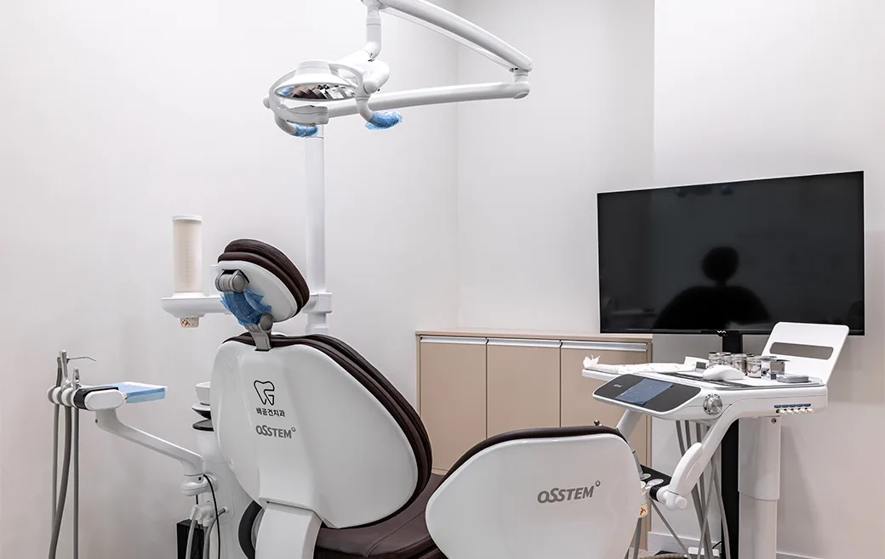
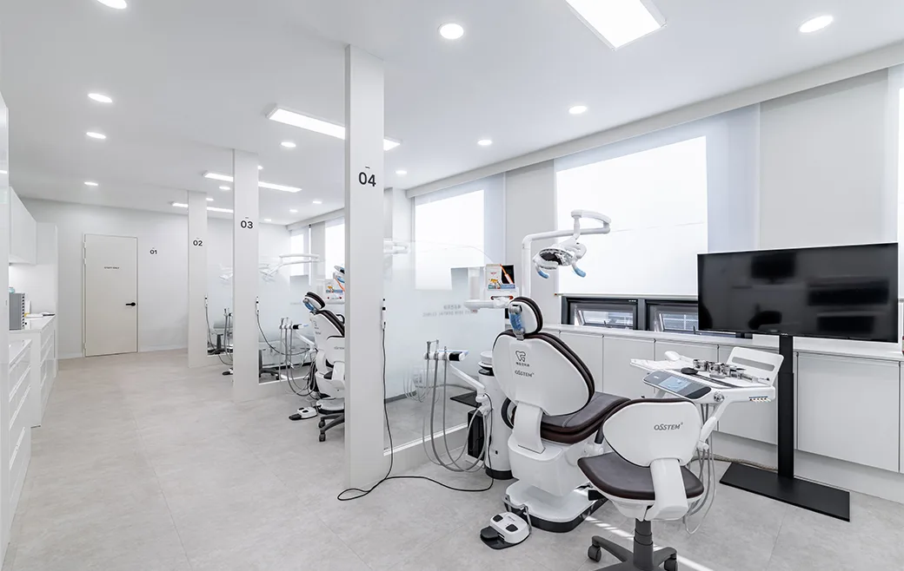
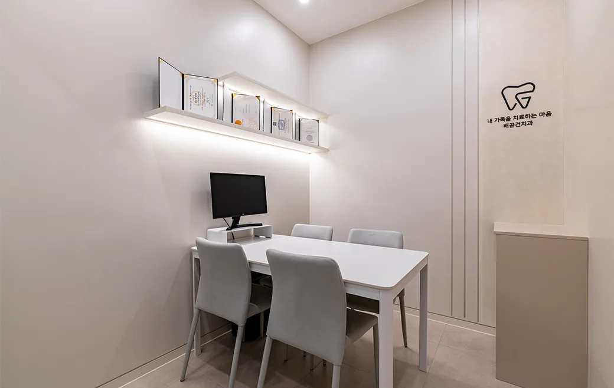
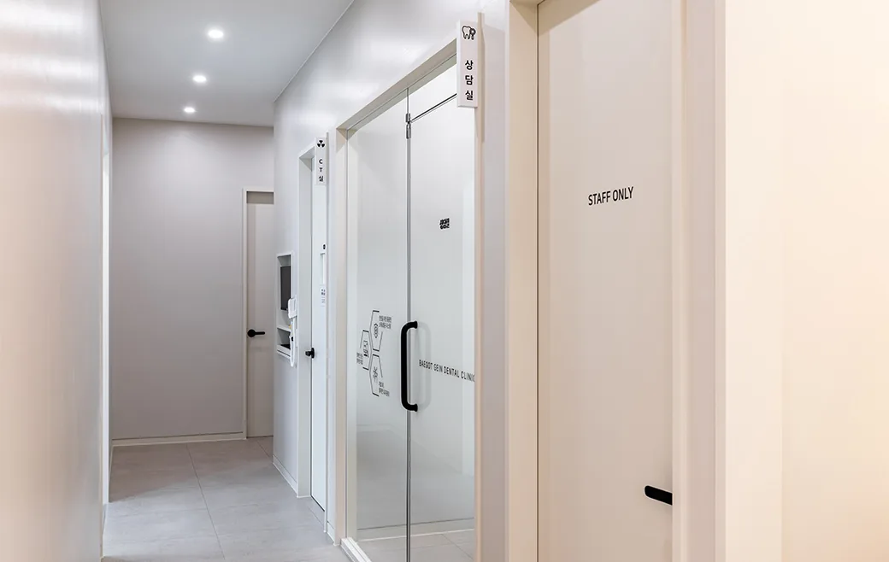
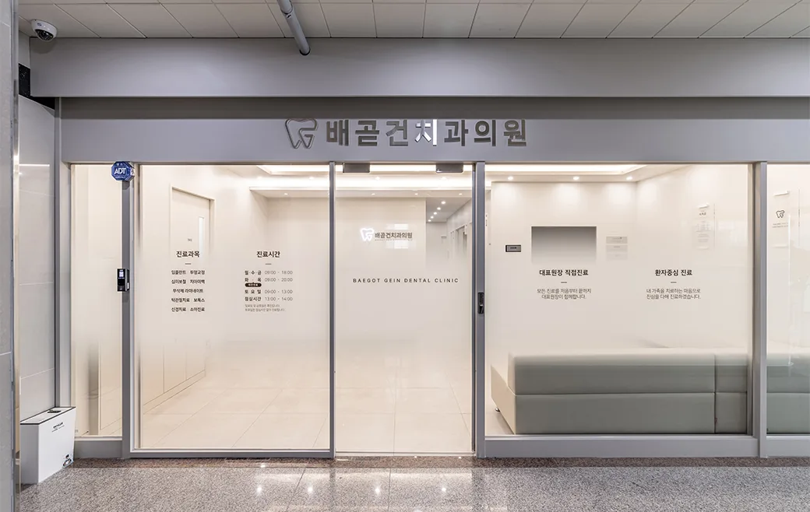

01
원칙을 지키는 진료
정해진 과정과 기준을 지키는 바른 진료만을 합니다. 꼭 필요한 치료를 정확하게 안내해 드립니다.

WHY BAEGOT GEIN
치료의 시작부터 끝까지, 원칙을 지키는 진료로 온 가족이 편하게 다닐 수 있는 치과를 만듭니다.
정해진 과정과 기준을 지키는 바른 진료만을 합니다. 꼭 필요한 치료를 정확하게 안내해 드립니다.
개별기구 포장 원칙으로 교차감염을 방지합니다. 사용된 기구를 철저히 소독해 쾌적한 환경을 유지합니다.
전문 의료진의 1:1 맞춤 진단으로 개개인에 맞는 체계적인 치료를 통해 자연스러운 미소를 완성합니다.
TREATMENTS
충분한 상담과 정밀 진단을 바탕으로, 상태에 맞는 진료 방향을 안내해 드립니다.
잇몸뼈 상태를 정밀하게 진단하고, 개인에게 맞는 계획으로 자연치아에 가까운 저작 기능을 회복합니다.
치아 삭제를 최소화하는 퓨어네이트(Purenate) 방식으로 자연스러운 형태와 색을 되찾습니다. 진짜 내 치아 같은 자연스러움을 추구합니다.
눈에 잘 띄지 않는 투명 장치로 일상의 불편을 줄이며 치열을 개선합니다. 성인은 물론 소아 투명교정까지 상담해 드립니다.
충치와 잇몸 관리 같은 기본 진료부터 꼼꼼하게. 작은 불편도 놓치지 않고 원인부터 확인해 재발을 줄입니다.
사랑니의 위치와 신경 관계를 확인해 안전하게 접근합니다. 턱관절 통증·이갈이 등은 원인에 맞춰 관리 방향을 안내합니다.
지금의 구강 상태를 정확히 확인하는 것부터가 관리의 시작입니다. 정기 검진으로 문제를 조기에 발견하고 예방합니다.
CLINIC TOUR
깨끗하고 편안한 진료 환경. 대기실부터 진료실까지 직접 둘러보세요.







 이지은 대표원장
이지은 대표원장
DIRECTOR
전문적인 치료와 함께 따뜻한 마음을 나누며, 의료의 본질적인 가치를 지키고자 합니다.
REVIEWS
★★★★★“내부 깨끗하고 선생님들 다 친절하십니다. 진찰 자세히 해주시고 비용이랑 치료 안내 상세히 설명해주셔서 너무 좋았습니다.”
★★★★★“배곧누리 없어서는 안 될 치과, 깨끗해요~ 가까운 곳에 좋은 치과가 생겨서 좋네요.”
★★★★★“시간에 쫓겼는데 신속·정확하게 진료해 주시고 치료도 해주셨어요. 설명도 꼼꼼해서 믿음이 갑니다.”
VISIT US
| 월 · 목 야간 | 09:30 – 20:00 |
|---|---|
| 화 · 금 | 09:30 – 18:30 |
| 토요일 | 08:30 – 12:30 |
| 점심시간 | 13:00 – 14:00 |
| 수요일 · 일요일 | 휴진 |
※ 공휴일이 있는 주는 진료 09:30 – 18:30